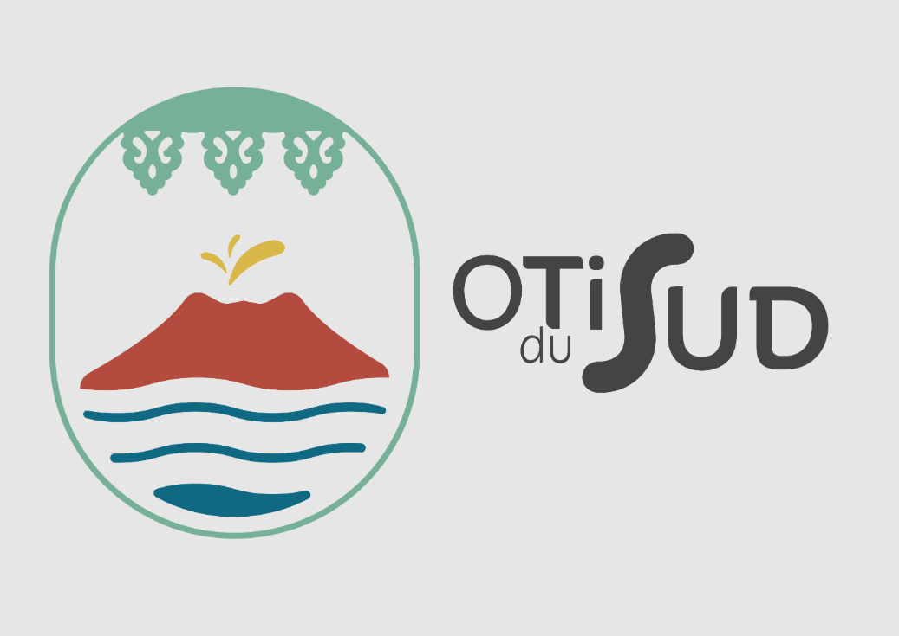

1
Interopérable
Origine des données, identifiants externes, ingestion et cohabitation avec les outils déjà en place.

Référentiel touristique interopérable
Bertel 3.0 · OTI du Sud
Bertel relie les outils existants, sécurise la gouvernance et rend l'offre touristique lisible, fiable et diffusable.
Origine des données, identifiants externes, ingestion et cohabitation avec les outils déjà en place.
Droits fins par organisation, modération, versions, responsabilités et périmètres d'accès.
Consentements RGPD, pièces légales, visibilité publique ou restreinte, traçabilité.
Carte, filtres, tags, langues, FALC, accessibilité et durable prêts pour la diffusion.
Bertel ne demande pas de débrancher l'écosystème existant. Il ajoute la couche qui permet de relier, arbitrer, sécuriser et valoriser l'offre touristique du territoire.